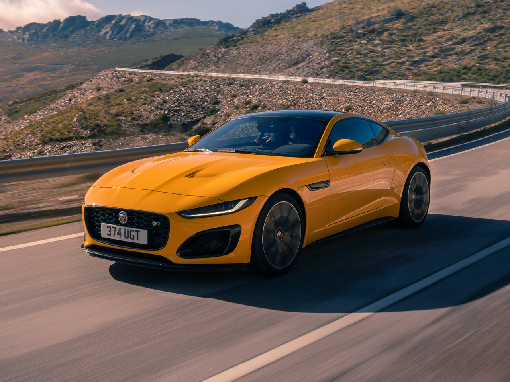

Jaguar, İngiltərə mərkəzli bir avtomobil markasıdır. 1920-ci ildə qurulan firmanı BLMC (British Leyland), 1990-cı ildə Forda satdı. Jaguar, 2008-ə qədər Fordun PAG adı verdiyi və Land Rover, Volvo, Aston Martın kimi lüks və prestijli markalardan meydana gətirdiyi alt qrupunda iştirak edirdi. 26 Mart 2008 tarixində Hindistanın ən böyük avtomobil markası Tataya satıldı. Ən əhəmiyyətli modeli 1965-ci ildə bazara yürüdülən E-Type, böyük bir satış müvəffəqiyyəti əldə etdi. Digər bir əhəmiyyətli model isə 1970-80-cı illər dövründə çıxarılan XJ-S 2 qapılı modeldir. Jaguar, avtomobillərinin mühərrik kapotunun üstündə iştirak edən və tullanan Jaguar fiqurunu, meydana gələ biləcək qəzalarda, piyadaların yaralanma riskini azaltmaq üçün dəyişdirmişdir. Firma, çıxardığı yeni modellərinə bu Jaguar fiquru yerinə, Jaguar şəkilli bir lövhə vurur. Jaguar (UK: /ˈdʒæɡjuər/, US: /ˈdʒæɡwɑːr/) is the luxury vehicle brand of Jaguar Land Rover,[1][2] a British multinational car manufacturer with its headquarters in Whitley, Coventry, England. Jaguar Cars was the company that was responsible for the production of Jaguar cars until its operations were fully merged with those of Land Rover to form Jaguar Land Rover on 1 January 2013. Jaguar's business was founded as the Swallow Sidecar Company in 1922, originally making motorcycle sidecars before developing bodies for passenger cars. Under the ownership of S. S. Cars Limited, the business extended to complete cars made in association with Standard Motor Co, many bearing Jaguar as a model name. The company's name was changed from S. S. Cars to Jaguar Cars in 1945. A merger with the British Motor Corporation followed in 1966,[3] the resulting enlarged company now being renamed as British Motor Holdings (BMH), which in 1968 merged with Leyland Motor Corporation and became British Leyland, itself to be nationalised in 1975.
